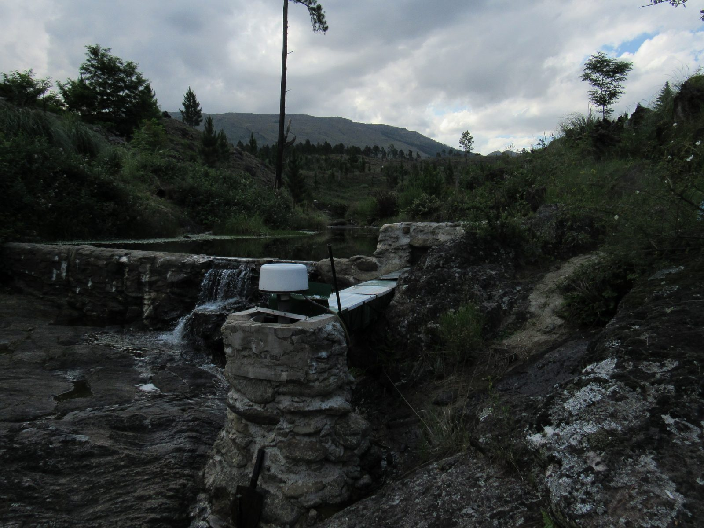
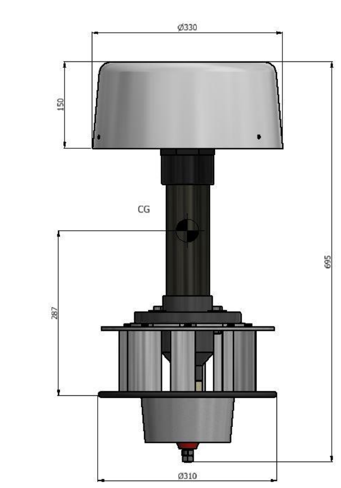
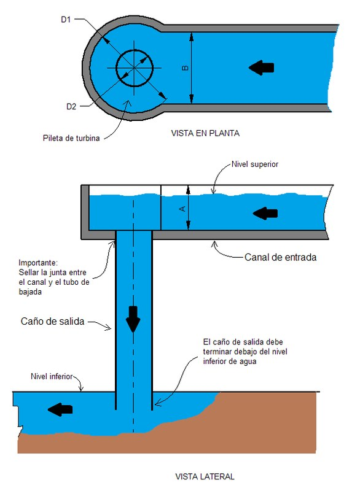
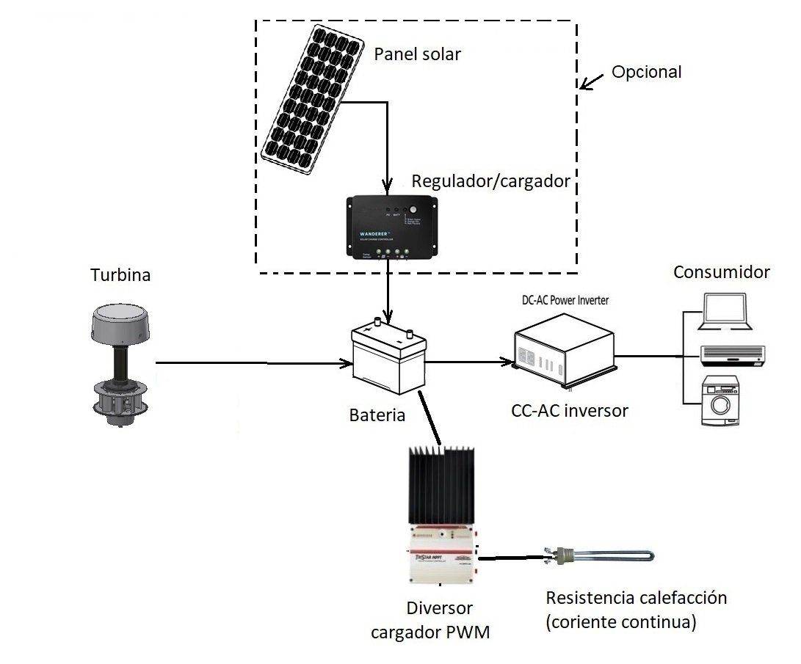
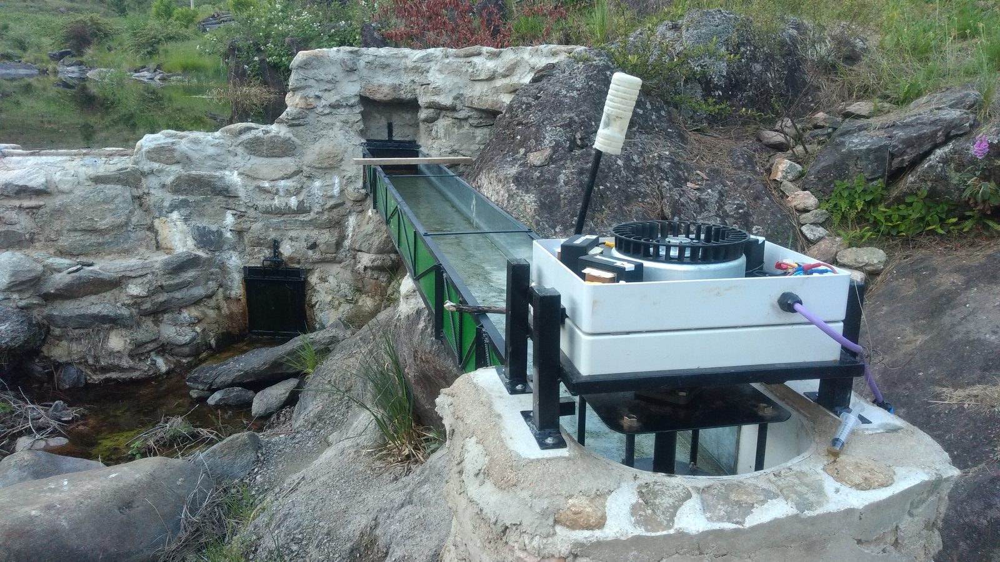
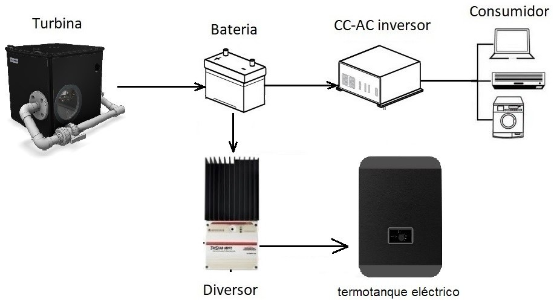

Genera las 24 horas
La turbina puede funcionar día y noche y es casi independiente de las condiciones meteorológicas. Por eso se necesitan menos baterías que con solar o eólica.

Microturbinas hidroeléctricas · Argentina
Generá electricidad propia con el agua de un canal, una vertiente o un arroyo. Funciona de día y de noche, con poco mantenimiento y sin depender del clima.
Por qué hidroeléctrica
Para uso doméstico hay tres caminos: solar, eólico e hidráulico. Cada uno tiene su lugar; la hidráulica gana cuando tenés agua con desnivel.
La turbina puede funcionar día y noche y es casi independiente de las condiciones meteorológicas. Por eso se necesitan menos baterías que con solar o eólica.
Cuando las baterías están llenas, la energía sobrante se deriva a una resistencia calefactora: sirve, por ejemplo, para calentar agua.
Paneles y turbina se complementan. Y el mantenimiento de la turbina es sencillo y no requiere un especialista.
Lo que hay que tener en cuenta: hace falta un sitio con agua corriente y cierta diferencia de altura, y preparar el lugar (canal, pileta o cañería) puede llevar más tiempo que instalar un panel solar. Frente a un panel, la turbina pide algo más de mantenimiento.
Guía rápida
Todo depende de dos números: la caída (desnivel que podés aprovechar, en metros) y el caudal (litros por segundo que pasan). Si hay mucho caudal y poca caída, va la axial. Si hay poco caudal y mucha caída, va la Pelton.
Turbina axial · baja caída, alto caudal
Turbina hidráulica de tipo axial (hélice) para autogeneración eléctrica a pequeña escala. Se apoya sobre una pileta, se conecta al sistema de carga de baterías y empieza a girar con el agua.
| Tipo | Axial (hélice), para baja caída y alto caudal |
|---|---|
| Potencia | 50 a 600 W, según las características hídricas del lugar |
| Caída (tabla de potencias) | 1 a 3 m |
| Caudal (tabla de potencias) | 15 a 40 L/s |
| Generador | Trifásico de imanes permanentes |
| Tensión de salida | Trifásica, 50 a 380 V (según la configuración) |
| Corriente de salida | 0,2 a 3 A (según la configuración) |
| Velocidad de trabajo | 600 a 900 rpm |
| Peso | 16 kg |
| Dimensiones | Altura total 695 mm · Ø 330 mm (tapa) · Ø 310 mm (disco inferior) |
| Materiales | PVC, aluminio, acero inoxidable y fibra de vidrio |
| Precio | Consultar |
| Garantía · stock · entrega | Consultar |
Potencia para una turbina, según caída y caudal. Valores del folleto. “—” = fuera de rango.
Mediciones de prototipo en dique, con carga resistiva (potencia eléctrica = tensión × corriente). Las líneas punteadas son los valores de la tabla del folleto.
Eficiencia global = potencia eléctrica medida ÷ potencia hidráulica (ρ·g·Q·H). Incluye todas las pérdidas: hidráulicas, mecánicas y del generador. Ensayo de 1,01 m del 03/12/2020; ensayo de 1,60 m del 07/01/2021. Son pruebas de prototipo, no garantía de desempeño en cada instalación.
Equipo base: turbina con generador trifásico de imanes permanentes (16 kg).
Obra y electrónica a definir según tu sitio: canal de entrada, pileta de turbina, caño de salida, soporte tipo Omega (opcional), diversor/regulador de carga, baterías, inversor y resistencia calefactora. Alcance exacto del suministro: consultar.




Turbina Pelton · alta caída, bajo caudal
Turbina tangencial para microgeneración: uno o más chorros de agua a presión golpean las cucharas de una rueda unida al eje del generador. Ideal para un arroyo de poco caudal pero mucho desnivel.
| Tipo | Pelton (tangencial), 1 o 2 boquillas según el caudal |
|---|---|
| Desnivel | 5 a 100 m |
| Caudal de agua | 0,5 a 5 L/s |
| Presión máxima de trabajo | 10 kg/cm² (150 PSI) |
| Potencia (tabla del folleto) | 17 a 603 W, según salto y caudal |
| Generador | Trifásico de imanes permanentes |
| Tensión de salida | Trifásica, 50 a 380 V (según la configuración) |
| Corriente de salida | 0,2 a 3 A (según la configuración) |
| Peso | 15 kg |
| Rueda | Disco central de aluminio con 32 cucharas de HDPE |
| Inyector | PVC, rosca hembra de 40 mm; boquilla de hasta Ø 12 mm, fabricada según tu caudal y presión |
| Dimensiones | Consultar |
| Precio | Consultar |
| Garantía · stock · entrega | Consultar |
“Potencia máxima” según el folleto. Con asterisco: versión con 2 boquillas. “—” = fuera de rango.
Prototipo a 20 m de salto, boquilla de 9 mm, 1,2 L/s y 100 m de manguera de 33 mm. Potencia eléctrica entregada (V × I) en función de la velocidad, variando la carga.
Ensayo del 07/12/2021. El máximo medido (65 W) es el mayor valor de la serie, no necesariamente el máximo de la turbina. La tabla del folleto indica potencias mayores para estas condiciones: es potencia máxima, y un ensayo con 100 m de manguera incluye pérdidas por fricción. Por eso conviene dimensionar la cañería con cuidado y estimar con eficiencia conservadora (ver calculadora).
Incluye: hidrogenerador (turbina Pelton + generador trifásico de imanes permanentes, carcasa con desagüe, inyector/boquillas).
No incluye (se vende por separado o lo resuelve el instalador): rectificador, diversor, resistencia, cargador de baterías, baterías e inversor. Yaku Energía puede hacer el estudio de viabilidad, asesorarte o asumir la instalación completa. Detalle del suministro: consultar.

Lado a lado
| Característica | LH 140 axial | Pelton Cube 230 Pelton |
|---|---|---|
| Cuándo conviene | Poca caída y mucho caudal | Mucha caída y poco caudal |
| Caída | 1 a 3 m (tabla de potencias) | 5 a 100 m |
| Caudal | 15 a 40 L/s (tabla de potencias) | 0,5 a 5 L/s |
| Potencia | 50 a 600 W según el sitio | 17 a 603 W en tabla del folleto |
| Generador | Trifásico de imanes permanentes, tensión 50 a 380 V y corriente 0,2 a 3 A según la configuración | |
| Peso | 16 kg | 15 kg |
| Cómo se instala | Apoyada en una pileta, con caño de salida de Ø 200 mm | Alimentada por cañería a presión, con 1 o 2 boquillas |
| Obra del sitio | Canal de entrada, pileta y caño de salida | Toma con filtro y cañería forzada |
| Mantenimiento | Sencillo: cambio del rodamiento superior cada 2 años y del buje inferior cada 5 a 10 años | Limpieza de los filtros de la toma y cambio de rodamientos cada 2 años |
| Precio | Consultar | Consultar |
| Acciones | Ver LH 140 | Ver Pelton |
¿Sitio con caída intermedia (entre 3 y 5 m) o fuera de estos rangos? Escribinos: lo evaluamos caso por caso.
Estimá tu potencia
Potencia hidráulica = ρ · g · Q · H. La eléctrica depende de la eficiencia global del conjunto, que podés editar.
Es una estimación. No reemplaza el relevamiento del sitio ni las tablas del folleto, y no es una garantía de potencia. La energía por día supone caudal y caída constantes. Si el resultado supera la capacidad del modelo, escribinos para ver cuántas unidades o qué configuración conviene.
Cómo comprar
Los precios dependen de tu sitio y de qué parte del sistema necesites, así que cotizamos a medida. Contanos tu caso y te respondemos.
Preguntas frecuentes
Depende de tu caída y tu caudal. El LH 140 entrega entre 50 y 600 W según el sitio; el Pelton Cube 230 va de 17 a 603 W en la tabla del folleto. Como referencia, 200 W continuos equivalen a 4,8 kWh por día, el consumo de un hogar chico. Usá la calculadora para una estimación.
Para uso aislado, sí: la turbina carga un banco de baterías a través de un regulador (diversor) y un inversor convierte a 220 V. Como la turbina produce de forma continua, el banco puede ser más chico que en un sistema solar o eólico. El tamaño depende de la autonomía que quieras.
Cuando las baterías están completas, el diversor manda el excedente a una resistencia calefactora, por ejemplo en un termotanque, para calentar agua.
Sí. Los dos sistemas se complementan: la turbina trabaja de noche y con mal clima, y los paneles aportan en las horas de sol. El excedente de los paneles también puede ir a calentar agua.
En el LH 140 es sencillo: se cambia el rodamiento superior cada 2 años y el buje inferior cada 5 a 10 años. En el Pelton hay que limpiar los filtros de la toma y cambiar los rodamientos cada 2 años. En ambos, el generador es trifásico y sin escobillas.
Si vas a construir un dique, tené en cuenta su impacto ambiental (fauna, riego, filtraciones) y consultalo con las autoridades de tu zona. En general conviene derivar solo una parte del caudal del cauce. El agua vuelve al arroyo sin cambios en su composición.
Los rangos de las tablas son de 1 a 3 m para el LH 140 y de 5 a 100 m para el Pelton. Con una caída entre 3 y 5 m, o con valores fuera de rango, escribinos y lo analizamos.
Un canal de entrada (de cemento, chapa o madera impermeabilizada), una pileta de fondo plano con un agujero de Ø 200 mm y un caño de salida de Ø 200 mm que termine por debajo del nivel inferior del agua.
Cotizamos según tu sitio y alcance. Precio, garantía, stock y plazos: consultar.
Estamos preparando animaciones interactivas de cada turbina. La del LH 140 ya está disponible en su sección (con represa, canal, despiece y calculadora); la del Pelton llega próximamente.
Sobre Yaku Energía
Yaku significa “agua” en quechua. Yaku Energía nació para llevar la hidroenergía a escala doméstica: turbinas livianas, de instalación sencilla, pensadas para el arroyo, el canal o la vertiente de cada lugar y no para grandes obras.
Las diseña Guillermo Díaz, ingeniero mecánico de Roldán, Santa Fe, con experiencia en diseño mecánico y simulación FEM/CFD. Los prototipos se probaron a campo, y los resultados de esas pruebas figuran en este sitio tal como se midieron.
Además de la turbina, podemos hacer un estudio de viabilidad, asesorarte en la instalación o asumir la instalación completa.